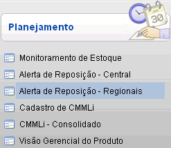
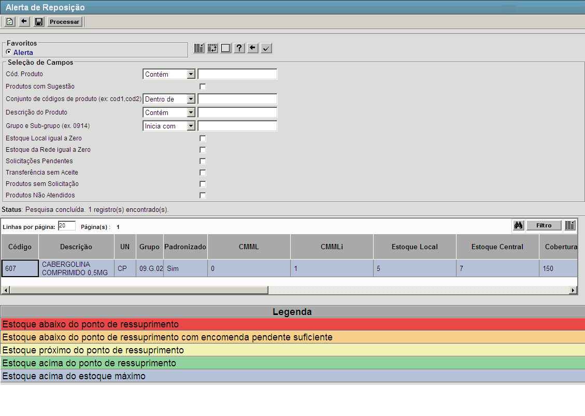
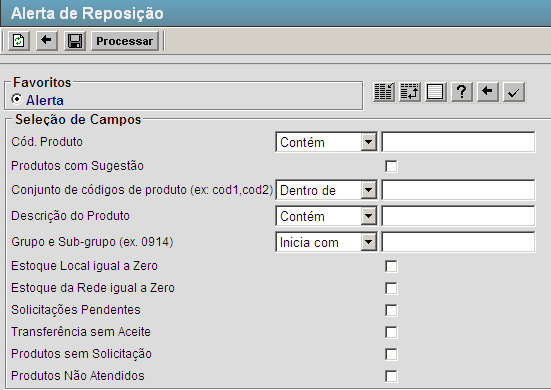
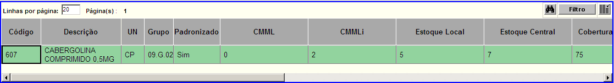

Alerta de Reposição - Regionais [ Voltar ] Utilize esta
tela para consultar a posição de estoque atual dos produtos no local.
Informações como estoque atual, mínimo, máximo, ponto de ressuprimento,
sugestão, encomendas pendentes, estoque virtual, entre outras
informações úteis ao planejamento, são acessíveis por meio desta tela.
O formulário "Alerta de Reposição - Regionais"
encontra-se dentro do menu "Planejamento".

Ao clicar no formulário, o sistema exibirá a seguinte
tela:

A tabela de resultado desta tela exibe as seguintes informações:
- Código. Código do produto no sistema;
- Descrição. Descrição completa do produto;
- UN. Unidade de medida cadastrada para o produto;
- Grupo. Grupo de produtos ao qual o produto pertence;
- Padronizado. Aqui é indicado se o produto é padronizado ou não;
- IC (Índice de Criticidade). Classificação do produto conforme seu grau de criticidade em relação a sua importância e substituibilidade;
- CV (Curva de Valor ABC).
Os produtos do estoque são separados em três categorias em função do
valor total e da representação em relação ao valor total do estoque. Os
produtos classificados com A possuem os maiores valores de estoque, enquanto os produtos B possuem valores intermediários e os produtos C são classificados como de baixo custo;
- Nível de Atenção. Aqui é informado a necessidade de atenção que o produto deve receber;
- Preço Última Compra. Aqui é informado o valor do produto na última compra;
- MOV (TRF) (Movimentações de Transferência). Indica todas as movimentações de transferência realizadas no local onde o usuário se encontra;
- CMM (Rede) (Consumo Médio Mensal). Trata-se do consumo do produto mensalmente na rede;
- Estoque Central. Aqui é informado a quantidade disponível do produto por meio dos locais centrais;
- Estoque NUMAB. Aqui é informado a quantidade disponível do produto no estoque da NUMAB;
- Estoque GEMEX. Aqui é informado a quantidade disponível do produto no estoque da GEMEX;
- Estoque Rede. Aqui é informado a quantidade disponível do produto em toda a rede;
- Cobertura de Estoque - Centrais. Tempo (em dias) em que o estoque médio será suficiente para suprir a demanda média do produto nas centrais;
- Cobertura de Estoque - Rede. Tempo (em dias) em que o estoque médio será suficiente para suprir a demanda média do produto em toda a rede;
- Encomendas Pendentes. Ordens de compra já processadas cujo recebimento está pendente;
- CMML (Consumo Médio Mensal do Local). Trata-se da quantidade do produto que é consumida mensalmente no local onde o usuário se encontra;
- CMMLi (Consumo Médio Mensal do Local Informado). Trata-se da quantidade informada pelo usuário do produto que é consumida mensalmente no local onde o usuário se encontra;
- Estoque de Segurança. Corresponde
à quantidade mínima desejável em estoque para este produto, com fins de
prevenção a incertezas de fornecimento edemanda;
- Ponto de Ressuprimento. Quantidade do
produto no estoque que indica a necessidade de realizar novas
aquisições. O cálculo deriva da soma: Estoque de Segurança +
(Demanda Mensal do Produto x Tempo de Ressuprimento);
- Estoque + Encomendas Pendentes. Quantidade de produto no estoque local + a quantidade de produtos que faltam recebimento;
- Estoque Máximo. Consiste na maior quantidade admissível em estoque;
- Sugestão p/ Solicitação. Cálculo de reposição
sugerido pelo sistema. O cálculo principal da sugestão consiste em:
Estoque Máximo - Estoque Virtual + Estoque de Segurança. Porém, este
cálculo pode ser sobreposto ao cálculo de parâmetros de reposição para
o Local e para o Produto. A hierarquia de sugestão é: Produto >
Local > Rede;
- Quant. Def. p/ PAM. Informe neste campo a quantidade desejada para realizar uma solicitação de aquisição;
- Atender?. Neste campo é informado se será ou não atendido o pedido de aquisição;
- Ata. Aqui são listadas todas as atas referentes ao produto;
- Saldo na Ata. Quantidade máxima do produto permitida por ata;
- Vigência das Atas. Período de tempo em que a ata é válida;
- Nº PAM. Número dos Pedidos de Aquisição de Materiais referentes ao produto;
- Nº Processo SICOP. Número do Processo relacionado ao PAM;
- Nº AFM. Número da Autorização de Fornecimento de Materiais;
- Nº Empenho. Número do Empenho referente a AFM;
- Data de Entrega dos Empenhos. Data acordada de entrega dos emprenhos;
- Fornecedor. Aqui são listados os possíveis fornecedores do produto;
- Detentor Atual do Processo SICOP. Preenchido via integração com o SICOP;
- Observações GEAB.
- Observações Programação.
Para consultar o planejamento de estoque, siga os passos abaixo:
1° Passo: configure os filtros da pesquisa. 
- Cód Produto - Inicia com. Para localizar um determinado produto, digite aqui a iniciais do código do mesmo. Se desejar, clique no botão
 [Procurar] para selecioná-lo a partir de uma listagem contendo todos os produtos cadastrados. [Procurar] para selecioná-lo a partir de uma listagem contendo todos os produtos cadastrados.
- Conjunto de Códigos do Produto: códigos dos produtos buscados (cod1.cod2)
- Descrição do Produto. Para localizar um produto por meio da descrição do mesmo, digite aqui uma palavra-chave.
- Grupo e Sub-rgupo. Digite aqui as iniciais do número do grupo de produtos para o qual deseja retornar resultados.
2° Passo: clique no botão  para
gerar os resultados. Os resultados serão exibidos imediatamente na parte inferior da tela. para
gerar os resultados. Os resultados serão exibidos imediatamente na parte inferior da tela.
Na
seção "Legenda" na parte inferior da tela, o usuário tem uma legenda de
cores para interpretação dos resultados da pesquisa. Ainda, para listar
exclusivamente produtos em determinada situação de estoque, clique na
legenda desejada.
3° Passo: para gerar uma requisição de compra, informe a quantidade definida para os produtos desejados.
Na tabela de resultados, informe no campo "Quantidade Definida" a
quantidade solicitada do produto selecionado. Repita o procedimento
para todos os produtos desejados.

4° Passo: após definidas as quantidades desejadas, clique no botão  para gerar uma ordem de fornecimento. para gerar uma ordem de fornecimento.
Para mais informações sobre requisições de compras, favor consultar o manual "Ordens de Fornecimento".
|